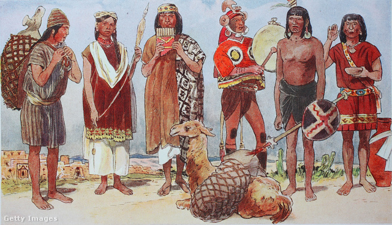
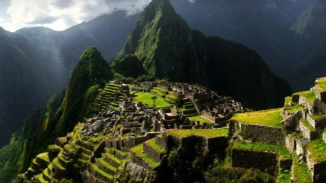

Az Inka birodalom
Az Inka Birodalom a spanyolok hódításai előtt létező ősi indián civilizáció Dél-Amerikában. Közigazgatási, politikai és katonai központja Cuzco volt. Legnagyobb kiterjedésekor magába foglalta a mai Ecuador, Peru, Kolumbia, Bolívia, Argentína és Chile több részét. Az inkák egy történelmi fejlődés utolsó szakaszának voltak főszereplői. Az Inka Birodalom egyike volt a világ legnagyobb és legfejlettebb kultúráinak a 13-16. század között.
Az inka társadalom
Az Inka Birodalom alapvető társadalmi és gazdasági egysége a faluközösség volt, mely a földeket és az állatállományt közösen birtokolta. Az állam élén az inka állt, akit földre szállt istenségként tiszteltek. Az ázsiai termelési mód elméletének hívei szerint az Inka Birodalom ennek a termelési módnak a tipikus megvalósulása volt.
Építészetükre nem jellemző a piramis, de Nap-templomaikat és más reprezentatív építményeiket hatalmas, faragott kövekből rakták fel, a tagolatlan falfelületre csak a kőosztás vitt némi változatosságot. A kereket ugyan ismerték, de nem használták teherhordásra, csak játékok készítésére. Kőutakat építettek, hogy könnyebb legyen a közlekedés. Az inkák nem tudtak írni és olvasni. Életükről különböző pontokon megcsomózott zsinórokkal, a quipukkal (ejtsd: kipu) készítettek feljegyzéseket.
Az inka törvénykezés
A föld közös tulajdonban volt. A legnagyobb bűnnek a hazugság, a lopás és a lustálkodás számított; ezeket halállal sújtották, az út mellé láncolták a törvényszegőket, az arra járóknak joga volt megkövezni őket, majd a holttestüket a szemétdombra vetették. A törvények betartása érdekében minden településen számba vették és tizedekbe osztották a lakosságot. 10 emberre 1 vezető jutott, akit tizedesnek hívtak. 5 ilyen 10 főből álló tizednek a főnöke az 50 fő élén állt.
A tizedesek feladata volt:
- szükség esetén a szakasz szószólója lenni
- segíteni a tizeden
- beszámolni a kormányzónak vagy egyéb tisztviselőnek
- minden bűncselekményről beszámolni magasabb rangú tisztnek
Az inka zene
Az inkák nem csak a politikához, hanem a zenéhez is jól értettek. Most halgassatok meg egy kis részletet egy igazi inka zenéből: